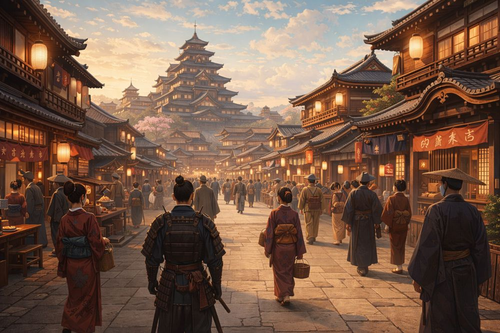

概要

日輪は等しく照らし、旭は万里を統べる
基礎情報
国名
アサナギ（旭和）
首都
オウギ（央祁）
統治形態
武家政権を頂点とした連合國家型（中央集権化が進行）
中枢人物
アマギ・カゲヒサ、アマギ・カガリ
繁栄の基盤
國土に点在する龍脈（農業・民生・軍事・法術・物流の基盤）
国際的立ち位置
大陸各地で大小の國家が群雄割拠する中、アサナギは「基準となる国家」「中心に最も近い国家」として振る舞う。
その存在は、同盟・交易・軍事均衡のいずれにおいても参照点となる。
近年は大妃『カガリ』の手腕によって再びの繁栄期を迎えると同時に、覇権主義的な気運が高まりつつある。
政体と制度整備
広大な領土と人口を抱え、武家政権を頂点とした連合國家型の体制を取る。
大君を頂点として法制度・軍制・問屋網・法術運用の規格化・整備が行われており、大陸の中ではかなり中央集権化が進んでいる。
整備されている領域
- 法制度：統一的ルールと裁定の整備
- 軍制：動員・指揮系統・装備運用の標準化
- 問屋網：物流・流通の基盤
- 法術運用：規格化による効率・互換性の確保
繁栄の構造：龍脈インフラ
アサナギの繁栄は國土に点在する龍脈に支えられており、そこから生じるエネルギーは農業、民生、軍事、法術、物流といったあらゆる産業の基盤となる。
主な影響範囲
- 農業：生産性の底上げ／安定供給
- 民生：都市機能・生活基盤の維持
- 軍事：兵站と戦力投射能力の強化
- 法術：運用規格化と大規模実装の前提
- 物流：問屋網と連動した輸送力
反面、過剰に噴き出した法力によって人や土地が穢れを背負う事故も度々起き、社会問題となっている。